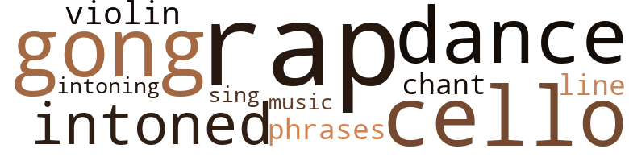

Peter and Anne, by Easterling, Narena (1942)
16 music-related terms matched in this text.
Most frequent terms in this topic: cello (2); dance (2); gong (2); rap (2); violin (1)
cello.n.01
Definition: a large stringed instrument; seated player holds it upright while playing
| word | sentence |
|---|---|
| cello | She was wondering if it were too late to change , when the door from the back hall opened and Nolia entered with a tray on which were a little pot of steaming coffee and a half-pint brown bottle shaped like a cello . |
| cello | " Like a cello , " Anne corrected automatically . |
chant.n.01
Definition: a repetitive song in which as many syllables as necessary are assigned to a single tone
| word | sentence |
|---|---|
| chant | She felt she could not have endured these climactic hours if the siren of the night before had not been replaced by a few phrases that were like a chant deep within her : " Peter is coming back . |
dance.v.03
Definition: skip, leap, or move up and down or sideways
| word | sentence |
|---|---|
| dance | " Out to the club to dance . |
| dance | " I do n't like to dance too soon after a heavy meal . " |
gong.n.01
Definition: a percussion instrument consisting of a metal plate that is struck with a softheaded drumstick
| word | sentence |
|---|---|
| gong | Outwardly she was calm , but inwardly there was tumult in which three names were reiterated , each sharper , higher than the one before it , like a three-toned gong in an echoing temple . |
| gong | ... As she sat in the salon and the minutes dragged into the quarter hours , into a half hour , approached the full hour , the gong within Anne became a siren , a screeching siren that was shattering her nerves . . . . |
music.n.01
Definition: an artistic form of auditory communication incorporating instrumental or vocal tones in a structured and continuous manner
| word | sentence |
|---|---|
| music | " No music of any kind at Antoine 's , and never a floor show . " |
phrase.n.02
Definition: a short musical passage
| word | sentence |
|---|---|
| phrases | She felt she could not have endured these climactic hours if the siren of the night before had not been replaced by a few phrases that were like a chant deep within her : " Peter is coming back . |
rap.n.05
Definition: genre of African-American music of the 1980s and 1990s in which rhyming lyrics are chanted to a musical accompaniment; several forms of rap have emerged
| word | sentence |
|---|---|
| rap | A timid rap and Nolia 's soft voice whispering , " Anne , are you awake ? |
| rap | At this moment there was a rap on the door . |
sing.v.02
Definition: produce tones with the voice
| word | sentence |
|---|---|
| sing | " Paint , sing , dance ? " |
tone.v.01
Definition: utter monotonously and repetitively and rhythmically
| word | sentence |
|---|---|
| intoned | Then , " Courage , my daughter , " intoned a well known beloved voice , and for a moment a kind , warm , comforting hand rested on her bowed head before the footsteps - old , tired , faithful - moved on . |
| intoning | But now as she stood before the family tomb listening to the priest 's intoning voice , looking down at her tightly clasped , black-gloved hands , the thought came - Maybe the fact that some part of me sees my physical self standing here is proof that I , that humanity , is not all physical , that some essence within us is spiritual . |
tune.n.01
Definition: a succession of notes forming a distinctive sequence
| word | sentence |
|---|---|
| line | From the church steps she saw also that a line of waiting cars stretched around the four sides of the square , notre vieille Place d'Armes , as her grandmother lovingly used to call it . |
violin.n.01
Definition: bowed stringed instrument that is the highest member of the violin family; this instrument has four strings and a hollow body and an unfretted fingerboard and is played with a bow
| word | sentence |
|---|---|
| violin | Shaped like a little glass violin . " |
89 violence-related terms matched in this text.
Most frequent terms in this topic: kill (11); spite (8); killed (7); murder (5); hurt (5)
abrasion.n.01
Definition: an abraded area where the skin is torn or worn off
| word | sentence |
|---|---|
| scratch | It was as Harry 's sharp eye had noticed , even to the feathery scratch on the paper label . |
anger.n.01
Definition: a strong emotion; a feeling that is oriented toward some real or supposed grievance
| word | sentence |
|---|---|
| anger | " Did André intimate that I am interested personally in Vanna ? " he demanded - with unnecessary anger , Anne thought . |
| anger | Anne 's anger flared at his tone . |
| anger | " It 's probably not as dangerous for you as Vanna Varensky 's anger ! " |
| anger | Anne felt her anger rising against him , against André . |
bleeding.n.01
Definition: the flow of blood from a ruptured blood vessel
| word | sentence |
|---|---|
| hemorrhage | " You mean she had a - a hemorrhage ? " |
contemn.v.01
Definition: look down on with disdain
| word | sentence |
|---|---|
| despise | " I despise him . |
| scorned | Vanna scorned . |
| scorned | she scorned silently . |
draw.v.23
Definition: pull (a person) apart with four horses tied to his extremities, so as to execute him
| word | sentence |
|---|---|
| drew | " Now , " André exclaimed when once again they drew up before the old French Market , " we are ready to appreciate a cup of steaming coffee ! " |
| drew | At length he drew up under the porte-cochère of a big new buff brick house . |
fight.n.05
Definition: a boxing or wrestling match
| word | sentence |
|---|---|
| fight | We had a quarrel , a fight , about a year ago , but he said , ' Glaise , I need your help . |
| fight | But there was no keeping him from the fight ! |
fight.v.02
Definition: fight against or resist strongly
| word | sentence |
|---|---|
| fought | They fought one night , over a girl , at the Nut Club . " |
fit.n.01
Definition: a display of bad temper
| word | sentence |
|---|---|
| tantrum | " Grace is probably just indulging in a tantrum , " she continued aloud . |
gag.v.06
Definition: cause to retch or choke
| word | sentence |
|---|---|
| choked | " Tell me about your early life , " Anne said , her voice sounding choked in spite of her effort to speak naturally . |
| choke | " But one ca n't do anything with a man like André except choke him ! |
| choking | Anne felt suddenly as if she were choking . |
| choked | André Joffrion , " Anne choked , " it 's almost impossible to believe that anyone could be as selfish as you ! |
| choked | " Poor André ! " she choked . |
| choked | He should be choked , she thought somberly , for putting Nolia and me in such a predicament ! |
harm.v.01
Definition: cause or do harm to
| word | sentence |
|---|---|
| harm | He - he went off in the same plane with Vanna Varensky , but - he would n't harm my brother . |
hate.n.01
Definition: the emotion of intense dislike; a feeling of dislike so strong that it demands action
| word | sentence |
|---|---|
| hatred | Anne did not contend aloud , but to herself she summed up : Vanna hated André , with an ugly jealous hatred ; told me yesterday that she had been wishing all night that he was " off the earth . " |
hate.v.01
Definition: dislike intensely; feel antipathy or aversion towards
| word | sentence |
|---|---|
| hated | " But I told you I hated books , just as I hate the river , the bayous , the lake . " |
| hate | " But I told you I hated books , just as I hate the river , the bayous , the lake . " |
| hate | I was just jumping at the first thing that came into my mind because I hate to see you so unhappy . |
| hate | I hate leaving you for even three days . |
| hated | Anne hated his bullying voice . |
| hated | Anne did not contend aloud , but to herself she summed up : Vanna hated André , with an ugly jealous hatred ; told me yesterday that she had been wishing all night that he was " off the earth . " |
| hate | Yet I hate to see them drag the girl back here for trial . |
injury.n.01
Definition: any physical damage to the body caused by violence or accident or fracture etc.
| word | sentence |
|---|---|
| harm | We eat , every day , innocent animals who have never done us harm . |
kill.v.10
Definition: cause the death of, without intention
| word | sentence |
|---|---|
| kill | I may have to kill that brother of yours yet , but do n't let anything he does worry you ! |
| killed | She said her father killed her mother by slow torture , that he used to beat her and Vanna daily - for amusement . " |
| kill | " Why should a girl who had gone through all she has want to kill herself on account of André ? " |
| kill | " You do n't think she will kill herself ? " |
| killed | Maybe she would n't have killed herself , anyhow . |
| kill | We kill ants by the thousands , whose only crime is that they 're working hard to make a living . |
| killing | I probably would have done it anyhow instead of killing myself . " |
| killed | I dreamed someone had killed Andre and - " " Oh , is that all ? |
| killed | Maybe I was the one who killed that handsome , spoiled brother of yours ! |
| kill | That you were just sticking to me out of a mistaken idea of loyalty , out of sympathy - I wanted to kill him when he said that . |
| killed | If he had not gone naturally , then someone had killed him ! |
| kill | This would kill her mother , who so worshipped André that she had never seen any fault in him . . . . |
| kill | " I know that André would never , under any circumstances , kill himself . |
| killed | Who had killed her twin ? |
| kill | " One does n't kill insects , Anne , by putting strychnine in expensive brandy ! " |
| killed | But for the time being her desire to discover who had killed him had wavered , and almost gone out . |
| kill | " Why , André Joffrion , I 'd kill you before I 'll let you sell our home out from under us and leave us all beggars on the street ! " |
| kill | " Our gentle Nolia would n't kill even a mouse ! " |
| kill | " I do not think she will kill anyone else . " |
killing.n.02
Definition: the act of terminating a life
| word | sentence |
|---|---|
| killing | " I 'll make a killing on futures one of these days ! |
knife.n.02
Definition: a weapon with a handle and blade with a sharp point
| word | sentence |
|---|---|
| knife | He opened his knife , cut for a few moments , then , " Here you are , sister . " |
malice.n.01
Definition: feeling a need to see others suffer
| word | sentence |
|---|---|
| spite | " Tell me about your early life , " Anne said , her voice sounding choked in spite of her effort to speak naturally . |
| spite | " In spite of all she 's gone through , she 's the healthiest person I ever saw . |
| spite | They hung upon her spirits like weights , in spite of her deep thankfulness for Peter , and his wholesome dependability . |
| spite | In spite of her expression she does n't seem a person life could scare . |
| spite | The chief was apparently impressed in spite of himself . |
| spite | This was the vague Nolia of the hospital bed , the foster sister whom she loved and whom , in spite of the slight difference in their ages , she had mothered for so many years . |
| spite | She hurried as fast as she could with her bathing and dressing , her mother 's lamentations filling the rooms in spite of closed doors . |
| spite | I must do one of those copies today , in spite of all that has happened ! |
molest.v.01
Definition: harass or assault sexually; make indecent advances to
| word | sentence |
|---|---|
| Molesting | This man was - " " Molesting you ? " |
murder.n.01
Definition: unlawful premeditated killing of a human being by a human being
| word | sentence |
|---|---|
| murder | By nature Anne was one who acts , who does something about a given situation , so striving to make her reason transcend her emotions , she tried to make her mind scrutinize carefully , sanely , this fact of Andrés murder . |
| murder | " Suppose the impossible - that he would commit murder - he would n't leave the evidence lying around for the first policeman to pick up . " |
| murder | Yet those who commit such crimes are often unbelievably careless about covering up their deeds ; the reason being , I believe , that people , not of the criminal class , who commit murder are always temporarily unbalanced . " |
| murder | A murder in our family ! |
| murder | It 's as clear a case of premeditated murder as I ever met up with - motive , means , corroborating evidence , everything . " |
murder.v.01
Definition: kill intentionally and with premeditation
| word | sentence |
|---|---|
| murdered | " My twin brother was murdered tonight . |
musket_ball.n.01
Definition: a solid projectile that is shot by a musket
| word | sentence |
|---|---|
| balls | As she stopped to pick some aromatic balls from a little camphor tree , she knew why . |
pain.v.02
Definition: cause emotional anguish or make miserable
| word | sentence |
|---|---|
| hurt | She must n't hurt Nolia . |
| hurt | What a shame , she sighed , to use all that beauty to hurt Nolia , who has no defenses against us who took her in and for whom she expresses her love in such constant service ! |
| hurt | If that good looking brother of yours has - " " André would n't do anything to hurt Grace 's feelings , " Anne interrupted with confidence , knowing that although his actions toward Nolia and Vanna had been despicable , with Grace , whom he hoped to marry , he would be courtesy and consideration personified . |
| hurt | The fresh air wo n't hurt her , she can put on a warm wrap . " |
| hurt | I 'm hurt that you thought it necessary to ask ! " |
parry.v.01
Definition: impede the movement of (an opponent or a ball)
| word | sentence |
|---|---|
| parried | " That should not be business , " Anne parried , but she said it discouragedly . |
pistol.n.01
Definition: a firearm that is held and fired with one hand
| word | sentence |
|---|---|
| pistol | Did she have a pistol concealed ? |
punch.v.01
Definition: deliver a quick blow to
| word | sentence |
|---|---|
| plugged | " Your hands are as cold as little ice cubes ! " she exclaimed as she drew the girl into the room and hastily plugged in an electric heater . |
| plugged | She had closed the windows , against which a gray fog was pressing , and had plugged in the electric heater . |
resentment.n.01
Definition: a feeling of deep and bitter anger and ill-will
| word | sentence |
|---|---|
| bitterness | There was even a trace of bitterness in it as he said , " I was hoping you could love me a little more than you did all three . " |
| bitterness | The dream of love was shattered and in its place came bitterness , tragedy and disaster . |
| bitterness | At last the tears came , a flood of them , washing away the strain , the bitterness , some of the awfulness of sudden death . |
| bitterness | Then , manlike , having made up his mind to wait no longer , he expected her to drop her work , her obligations , leave everything on two weeks ' notice and go off with him , although he had not , he stated with some bitterness , " made good " yet . |
resist.v.04
Definition: withstand the force of something
| word | sentence |
|---|---|
| resist | He probably thought a woman could n't resist him . |
sting.n.03
Definition: a painful wound caused by the thrust of an insect's stinger into skin
| word | sentence |
|---|---|
| bite | Peter , evidently needing Vanna 's help with his experiment , had asked her to stay , and quite naturally was taking her out for a bite to eat before beginning work . |
suicide.n.01
Definition: the act of killing yourself
| word | sentence |
|---|---|
| suicide | And it was n't suicide . " |
| suicide | Then , before she could reply , he asked , " Why , when I told you André had died of poisoning and had not committed suicide , did you say you knew ? |
weather.v.01
Definition: face and withstand with courage
| word | sentence |
|---|---|
| brave | But even as she did , she was brave enough to remind herself that one ca n't solve a problem by brushing it aside ; that the only possible way is to try to get the facts , whatever they are , and with them as premises , strive to work out the one correct solution . . . . |
| brave | " My brave one , your point is well taken . |
| brave | " You were so brave yesterday ! " |
whip.v.04
Definition: strike as if by whipping
| word | sentence |
|---|---|
| lashed | But her black eyes were large and heavily lashed like his , and also like his , they lacked depth . |
115 religion-related terms matched in this text.
Most frequent terms in this topic: Grace (52); cathedral (16); church (8); God (5); siren (4)
atheist.n.01
Definition: someone who denies the existence of god
| word | sentence |
|---|---|
| atheist | As if in answer to her steady gaze , he said more naturally : " Céleste was never an atheist nor an agnostic , as many of us who grew up here in old New Orleans were , are . |
blessing.n.05
Definition: the act of praying for divine protection
| word | sentence |
|---|---|
| blessing | As she left the cathedral , carrying with her the blessing of her mystic moment , she thought , I will marry Peter this week . |
| blessing | It 's a blessing I got here right away . |
cathedral.n.02
Definition: the principal Christian church building of a bishop's diocese
| word | sentence |
|---|---|
| cathedral | She went daily to the nearby cathedral to pray . |
| cathedral | " On Mardi Gras he promised we would have the religious service in the cathedral soon . |
| cathedral | As she dialed his number , the patient old clock of the cathedral clanged out three metallic strokes . |
| cathedral | She will dislike being so far from her beloved cathedral . . . . " But now that I have you back - " she said aloud . |
| cathedral | As the cathedral clock began to strike , Anne thought how many decades of human griefs and struggles it had tolled off , quarter hour by quarter hour . |
| cathedral | Her beloved old cathedral did not have architectural beauty , she acknowledged . |
| cathedral | As she crossed the narrow street which separated the old Place d'Armes from the cathedral , she took a deep appreciative breath . |
| cathedral | The cathedral , when she entered , was full of sharp , unpleasant smells . |
| cathedral | Just below the cathedral , the city 's slums spread out , fan-shape . |
| cathedral | As she left the cathedral , carrying with her the blessing of her mystic moment , she thought , I will marry Peter this week . |
| cathedral | As Anne walked home from the cathedral , the memory of her high moment bright within her , she was yearning over André . |
| cathedral | Although this was a picture of the facade of the church seen from a short distance through rain-soaked trees , Anne was putting into this painting something of the cathedral 's mystic meaning that had come to her as she knelt before the altar . |
| cathedral | After a while time signaled to her from the old cathedral . |
| cathedral | For hundreds of years all branches of the family - the deJoffrions , the Marignys , the Duponts , the St. Denises - had always had their christenings , marriages and funerals in the cathedral , and that ; according to Madame Joffrion and Madame Boudreaux , was sufficient reason why they should continue to do so . |
| cathedral | There were many people in the cathedral , Anne noticed , as the congregation remained seated while she and Cousin Victorine , the only members of the family present , walked out . |
| cathedral | Back home , before they left for the cathedral , it had done the opposite . |
catholic.n.01
Definition: a member of a Catholic church
| word | sentence |
|---|---|
| Catholic | As a good Catholic , it 's natural for her to believe in life after death , is n't it ? " |
| Catholic | ' Mother , you are a good Catholic , you know the dead are - ' " I recall how she shook her arm free from my clinging embrace . |
chant.n.01
Definition: a repetitive song in which as many syllables as necessary are assigned to a single tone
| word | sentence |
|---|---|
| chant | She felt she could not have endured these climactic hours if the siren of the night before had not been replaced by a few phrases that were like a chant deep within her : " Peter is coming back . |
church.n.02
Definition: a place for public (especially Christian) worship
| word | sentence |
|---|---|
| church | Anne was not devout as Nolia was , but she had an impulse now to go inside the church and pray . |
| church | After dipping her fingers in the holy water font , crossing herself , genuflecting , Anne went up the aisle to the de Joffrion pew , which was in the center of the church , near the front . |
| church | She forgot the people about her ; the stale atmosphere of the church vanished ; her personal problems slipped into oblivion . |
| church | Although this was a picture of the facade of the church seen from a short distance through rain-soaked trees , Anne was putting into this painting something of the cathedral 's mystic meaning that had come to her as she knelt before the altar . |
| church | Anne asked , and was told she had gone out with some church women . |
| church | " ' But the church say the dead live on ! ' |
| church | From the church steps she saw also that a line of waiting cars stretched around the four sides of the square , notre vieille Place d'Armes , as her grandmother lovingly used to call it . |
church_service.n.01
Definition: a service conducted in a house of worship
| word | sentence |
|---|---|
| church | ... I should have waited for the church service , n'est - ce-pas , Anne ? |
confession.n.05
Definition: the document that spells out the belief system of a given church (especially the Reformation churches of the 16th century)
| word | sentence |
|---|---|
| confession | As Nolia looked up at her for the first time since she began her confession , Anne was surprsed at the queer light in her eyes . |
| confession | " I wanted to ask her if she had a confession to make ! |
| confession | She says so herself , and that 's as good as a confession ! |
divine.v.01
Definition: perceive intuitively or through some inexplicable perceptive powers
| word | sentence |
|---|---|
| divine | And I do n't see why I expected you to divine everything , except that you always have been so marvelously understanding ! " |
eden.n.01
Definition: any place of complete bliss and delight and peace
| word | sentence |
|---|---|
| Paradise | " It must have been women like you and Grandmother who made old New Orleans such a Paradise for masculine profligates ! |
| Paradise | He was looking at Grace Axline as if a blonde bit of Paradise had fallen from the skies and landed before him . |
god.n.03
Definition: a man of such superior qualities that he seems like a deity to other people
| word | sentence |
|---|---|
| gods | André was n't successful , but he was one of those rare favorites of the gods , to whom everything he wants is handed , without effort on his part . |
| God | Many of God 's poor came here to pray . |
| God | God alone - " " Bosh ! " |
| God | God go with you , dear heart , but go ! " |
| God | Who in this world could have - although I always said André , dear boy - may God rest his soul - was so - Listen , Anne , the undertaker wants to know about the kind of casket you want . |
| God | But thank God I can now take care of you , your mother and Nolia . |
grace.n.05
Definition: (Greek mythology) one of three sisters who were the givers of beauty and charm; a favorite subject for sculptors
| word | sentence |
|---|---|
| Grace | He is trying to marry Grace Axline . |
| Grace | No interruption until noon ; then Grace Axline telephoned to say : " André and I are driving out to the club for lunch and to play some tennis . |
| Grace | Grace 's laugh rippled out . |
| Grace | Grace was asking . |
| Grace | As she dropped the phone back in its cradle , Anne was visualizing how Grace 's thin face lit up , how luminous it was when she smiled , and was hoping - as much as she would adore having the child for a sister - that she would not fall for André . |
| Grace | Not since that Grace Axline came to town ! " |
| Grace | Then , one good cleaning on the market , I marry Grace Axline , and - " " Has she promised to marry you ? " |
| Grace | He and Grace were at the lake this afternoon . |
| Grace | Grace is home . |
| Grace | " Aunt Molly said Grace came home with her eyes red , as if she 'd been crying . |
| Grace | If that good looking brother of yours has - " " André would n't do anything to hurt Grace 's feelings , " Anne interrupted with confidence , knowing that although his actions toward Nolia and Vanna had been despicable , with Grace , whom he hoped to marry , he would be courtesy and consideration personified . |
| Grace | If that good looking brother of yours has - " " André would n't do anything to hurt Grace 's feelings , " Anne interrupted with confidence , knowing that although his actions toward Nolia and Vanna had been despicable , with Grace , whom he hoped to marry , he would be courtesy and consideration personified . |
| Grace | " But Grace never has been a cry-baby . |
| Grace | Anne was getting a little weary of all this concern about Grace 's childish tears . |
| Grace | Grace is crazy about you and - " Anne was shaking her head . |
| Grace | He said Grace came home weeping and locked herself in her room . " |
| Grace | " We were still playing , when Grace gave a little cough and - " He whipped out his white handkerchief , put it to his lips , looked at it , lifted his shoulders . |
| Grace | Grace 's voice caught on a sob . |
| Grace | When Grace went to him and threw her arms around his neck , he beamed at Anne over his sister 's silvery blonde head . |
| Grace | Grace 's eyes were filling with sudden tears . |
| Grace | " He probably has indigestion , " Grace was saying . |
| Grace | She started down the long hall , Grace and Harry following . |
| Grace | Grace made a movement with outstretched hand , then , with the subtlety of feeling characteristic of her , drew back and , taking her brother 's arm , nodded acquiescence . |
| Grace | " He en de li ' berry wid Mr. Axline an ' Miss Grace . |
| Grace | Grace is nuts about you , too , for some reason . " |
| Grace | And Grace was talking to him , looking at him as she had never looked at André . . . . |
| Grace | Grace hurried to her . |
| Grace | A moment , and Grace arose , crossed the library , went over to the sofa and sat down beside him . |
| Grace | With a cry of sympathy , Grace was hurrying toward them . |
| Grace | Then , at Grace 's look of disappointment , added , " Come back and be with me - tomorrow . |
| Grace | " The day after , " Grace said in a low voice . |
| Grace | Just when , depending , of course , upon when a plane leaves Akron and what connections he can make in Cincinnati . . . . Anne , I took Grace to the doctor . " |
| Grace | I wish you 'd keep an eye on Grace while I 'm away , if she does stay here this summer . " |
| Grace | Grace Axline , ignoring André 's proffered help , gathered up the long skirt of her dress and jumped out unaided . |
| Grace | Grace 's small white hand made the Latin gesture of negation which she had evidently picked up down here . |
| Grace | But Grace was not ready to change the subject . |
| Grace | For Harry had told her he was thirty-seven and André had said Grace was eighteen . |
| Grace | Grace is why I sold the pottery . |
| Grace | He had just put his hand over Grace 's where it lay on the table . |
| Grace | But Grace quietly slipped her hand from under his . |
| Grace | In Anne 's mind the idea was crystallizing that Grace did n't like André . |
| Grace | And perhaps young Grace was just shy . |
| Grace | Grace is like him . " |
| Grace | " I want to have a career , some kind of self-expression , " Grace said , looking at her brother like a spoiled child , as if it were his fault she had n't one already . |
| Grace | But frail , blonde young Grace seemed to have a mind of her own . |
| Grace | In reply to Grace 's reiteration that she wanted to stay in New Orleans for the summer , Harry said : " No , kid . |
| Grace | Then as Grace hesitated , evidently disappointed , she added quickly , " I wish you 'd have André buy me a few bunches of vertivert . |
| Grace | She had come to stay with baby Grace . |
| Grace | You 'll have my love and Grace 's . |
| Grace | Since Grace 's arrival I know I 'm right . |
| Grace | André and Grace had appeared in the doorway . |
| Grace | When they left the club a little after midnight , Grace asked that they go by the French Market for coffee , saying she had heard that was a favorite way to end a gay New Orleans evening . |
prayer.n.01
Definition: the act of communicating with a deity (especially as a petition or in adoration or contrition or thanksgiving)
| word | sentence |
|---|---|
| prayer | Anne 's whisper was almost a prayer . |
| prayers | Then , getting up , she went out , leaving Nolia to her prayers . |
| prayer | After the door had closed behind him and Colette , Anne remained standing where they had left her , her hands clasped together now as if in prayer . |
| prayers | Oh , bon Dieu , you do not answer prayers ! |
religion.n.01
Definition: a strong belief in a supernatural power or powers that control human destiny
| word | sentence |
|---|---|
| faith | " No faith in the warmth of love , chère ? " |
saint.n.02
Definition: person of exceptional holiness
| word | sentence |
|---|---|
| Saint | As she moved away from the tree , her attention was caught by an arresting glimpse of old Saint Louis Cathedral . |
| Saint | After this she remained a few moments , not praying , not even consciously thinking ; just kneeling , her eyes on the bright shining altar with its mural painting of Saint Louis above . |
| angel | The lights on the boats and from the city made blurred splotches of brightness like lights on a Christmas tree that has been covered with " angel 's hair . " |
| saints | " If no one but herself touched the bottle , if she did n't put the poison in , how in the name of all the saints did it get in ? |
sin.n.06
Definition: violent and excited activity
| word | sentence |
|---|---|
| sins | Perhaps the why would not be so hard to discover , but - whatever his sins , he had not deserved death ! |
siren.n.01
Definition: a sea nymph (part woman and part bird) supposed to lure sailors to destruction on the rocks where the nymphs lived
| word | sentence |
|---|---|
| siren | ... As she sat in the salon and the minutes dragged into the quarter hours , into a half hour , approached the full hour , the gong within Anne became a siren , a screeching siren that was shattering her nerves . . . . |
| siren | ... As she sat in the salon and the minutes dragged into the quarter hours , into a half hour , approached the full hour , the gong within Anne became a siren , a screeching siren that was shattering her nerves . . . . |
| siren | She could n't stand the conventional conversation and the siren . |
| sirens | To keep from thinking of such things and starting the sirens screeching again , she looked about her . |
| siren | She felt she could not have endured these climactic hours if the siren of the night before had not been replaced by a few phrases that were like a chant deep within her : " Peter is coming back . |
temple.n.03
Definition: an edifice devoted to special or exalted purposes
| word | sentence |
|---|---|
| temple | Outwardly she was calm , but inwardly there was tumult in which three names were reiterated , each sharper , higher than the one before it , like a three-toned gong in an echoing temple . |
| temple | Why , he must have had something sharp in his hand , Anne thought dully , for the blood was flowing warmly from a cut in her temple , was getting in her eye . |
| temple | " Not a deep cut , " he said , as he swabbed Anne 's temple with alcohol-soaked cotton . |
tone.v.01
Definition: utter monotonously and repetitively and rhythmically
| word | sentence |
|---|---|
| intoned | Then , " Courage , my daughter , " intoned a well known beloved voice , and for a moment a kind , warm , comforting hand rested on her bowed head before the footsteps - old , tired , faithful - moved on . |
| intoning | But now as she stood before the family tomb listening to the priest 's intoning voice , looking down at her tightly clasped , black-gloved hands , the thought came - Maybe the fact that some part of me sees my physical self standing here is proof that I , that humanity , is not all physical , that some essence within us is spiritual . |
worship.v.02
Definition: show devotion to (a deity)
| word | sentence |
|---|---|
| worshipped | This would kill her mother , who so worshipped André that she had never seen any fault in him . . . . |